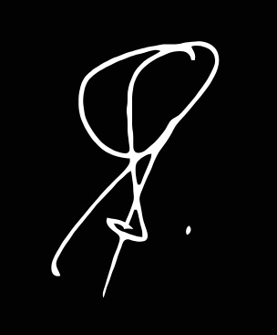

AI Voice Builder & Hardware Engineer
I design and build practical, real-world AI voice systems with a focus on accessibility, reliability, and usability — particularly for elderly users.
Memory is an AI voice companion developed specifically for elderly users. It combines embedded hardware with real-time cloud AI to deliver natural, helpful interaction.
I am currently seeking contract, freelance, or project-based opportunities in AI voice, conversational AI, and voice hardware integration — either remotely (UK/US) or on-site/hybrid in Johannesburg.
